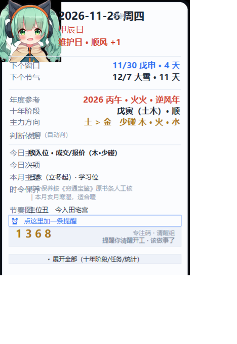

Xiaolv is a small widget that sits in the corner of your desktop. It gives you three tasks you can actually finish today, rings a spoken alarm when it is time, and ticks them off when you are done. No account, no cloud, nothing leaves your PC.

You know you have work, you just keep opening tabs. Three tasks with a deadline voice beat a list of forty.
Study blocks with a spoken reminder are easier to keep than a calendar you never look at.
If you bill by the hour, the monthly grid shows you which days you actually shipped.
$19 $29 launch price
One-time payment. Includes one year of minor updates.
Card, Apple Pay and Google Pay. Checkout handled by our payment partner; VAT/sales tax included where applicable.
| Platform | Windows 10 / 11 (64-bit) |
|---|---|
| Delivery | Instant download after payment |
| Files | Portable .exe (~19 MB) + user guide (中文 / English) |
| Updates | In-app notice + one-click update script |
| Data | Stored locally next to the .exe; never uploaded |
| Refunds | Full refund within 24 hours, no questions asked |
No. You pay once. Minor version updates are included for a year; after that the app keeps working exactly as it is.
No. It runs fully offline. The only network call is an optional version check you can ignore.
Not yet. This build is Windows-only.
In a data folder next to the executable: reminders, check-ins and notes. Delete the folder and everything is gone.
Right-click the .exe, open Properties, tick "Unblock", then run it again. If it still fails, email us and you get a refund.